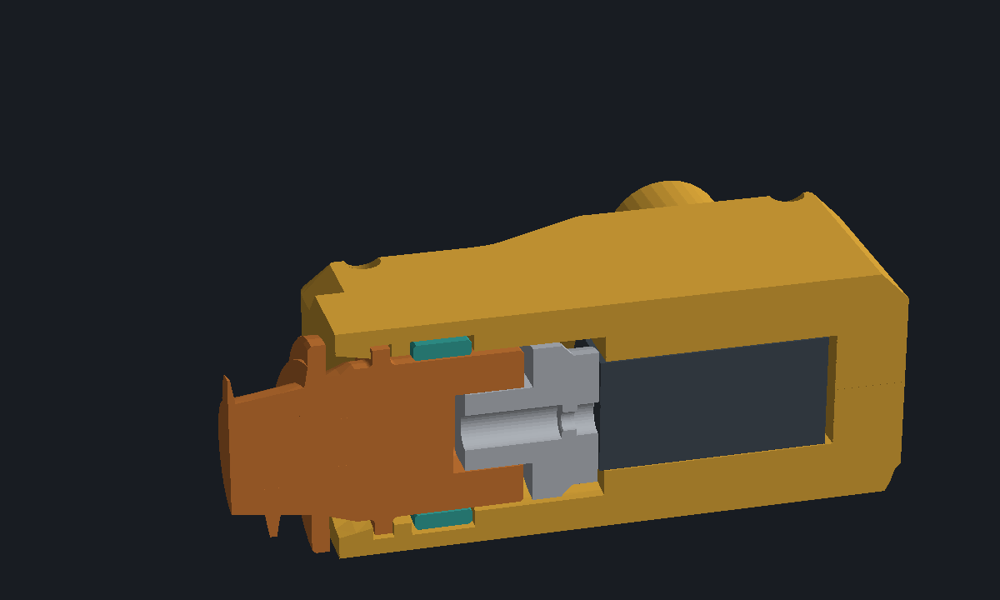
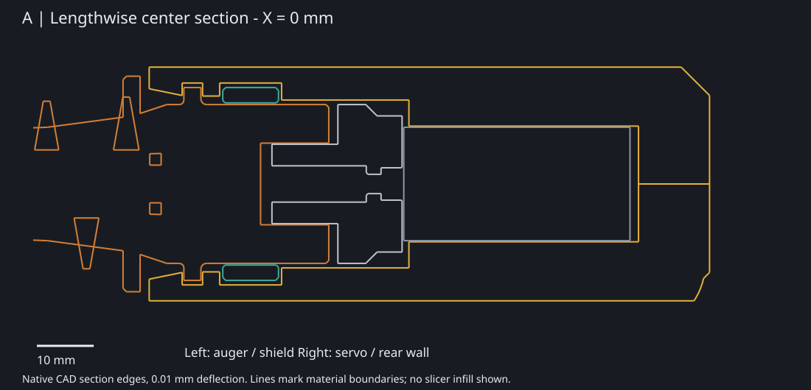
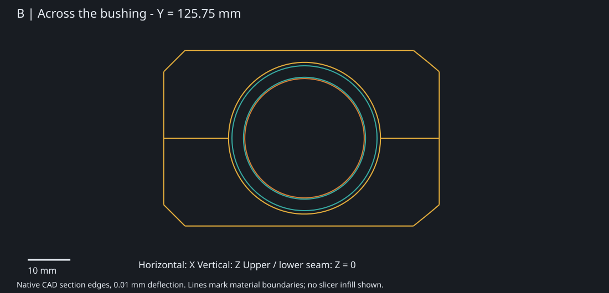
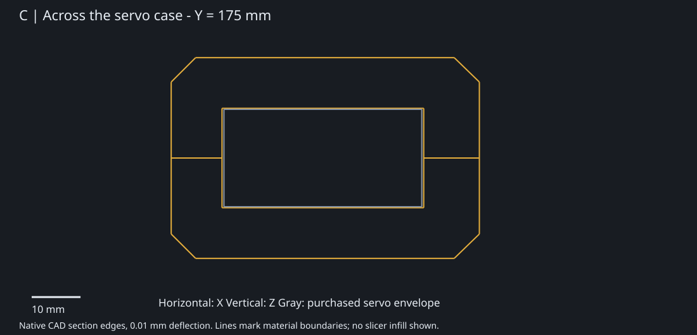
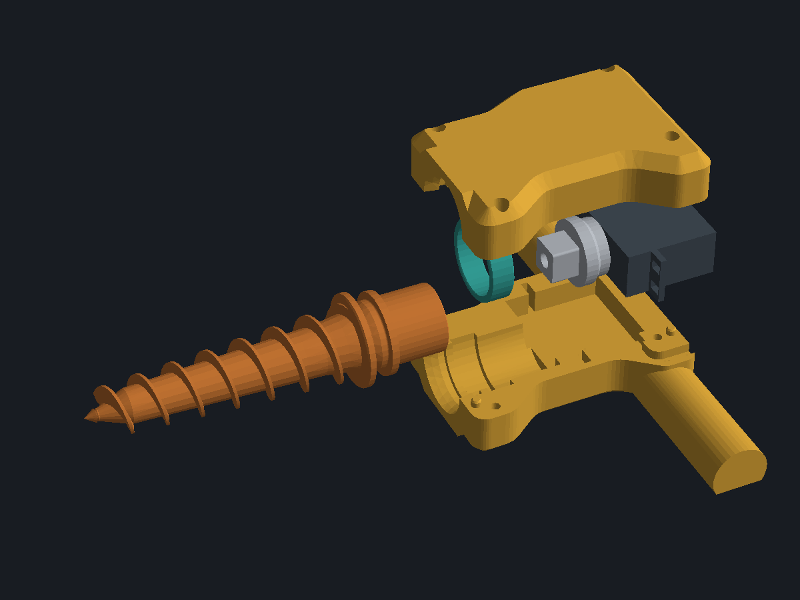
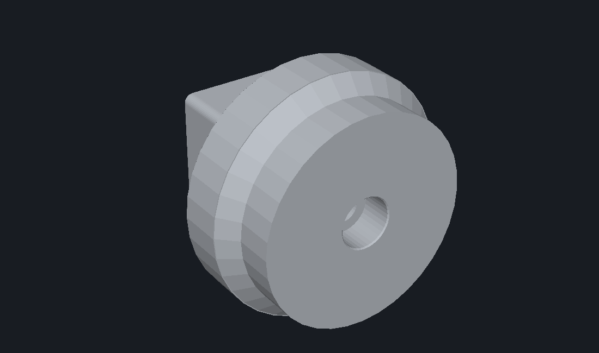
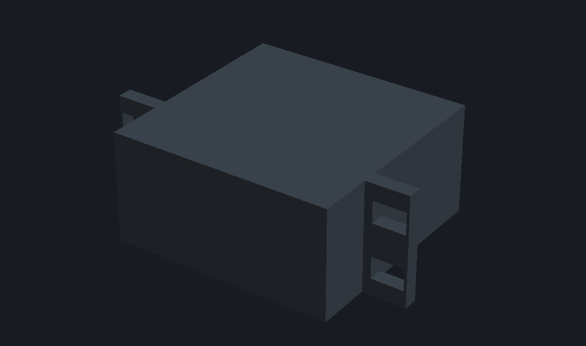

Current Ø38 mm shield assembly · Review views only; geometry unchanged

Yellow: housingOrange: augerTeal: bushingLight gray: adapterDark gray: servo reference

A — Follow the drive path. Shield → thrust collar → teal bushing → gray square adapter → servo. Shield-to-housing gap: 1.6 mm nominal. The broad yellow bands above and below the servo are the first areas worth reviewing.

B — Preserve the bearing support. Journal Ø28; bushing bore Ø28.6 / outside Ø34; housing seat Ø35.6. Nominal radial gaps are 0.30 mm inside and 0.80 mm outside the loose bushing. Housing stock at the top and bottom is 2.8 mm; this area has much less room for reduction.

C — Best material-reduction candidate. At this section, top and bottom housing stock is 10.4 mm each (outer Z ±20.6; cavity Z ±10.2). Explore a simpler local exterior step or bevel while retaining a continuous bed land, ear seats and screw supports. This is an opportunity to test, not an approved thinner wall.
Tap any part to enlarge it. Parts are shown at different scales.



Hardware: four M3 ×18 housing screws, four RX-M3×5.7 inserts and the factory-compatible servo center screw. Screw and insert solids are not included in these views.
1. Servo-region exterior: investigate reducing the broad 10.4 mm housing bands, keeping the bed land and mounting supports.
2. Handle roots: inspect the transition into the body for comfort and a simpler outline. The current grip is 24 mm wide and 18.6 mm high; comfort and strength require a physical check.
3. Auger printing: review the supported underside of the helix before changing its working diameter or pitch. The shield already has only one edge chamfer.
Read-only views from garden-auger-simple-print.limo, CAD SHA-256 987429dad3fabdc51b38ec5a020d5aae8f609566c952019497e56b6ef1bba3b0. Native 2D section edges use 0.01 mm deflection; the 3D cutaway clips native meshes. The source matches the existing validation report. No new physical fit, strength or ingress result is implied.